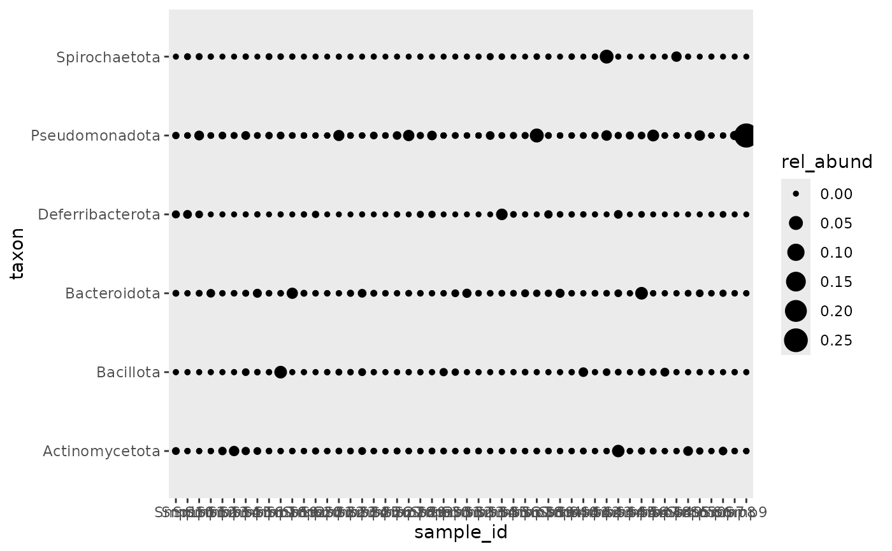

bubble_plot.Rd
Generate a ggplot2 bubble plot
bubble_plot(rel_abund_tb, x_var = "sample_id", color = NULL, italics = FALSE)
A relative abundance table in tibble format.
The variable to used on the x-axis.
The color.
Logical. Whether to use italics or not.
A ggplot
rel_abund_phy(physeq) %>% bubble_plot() 